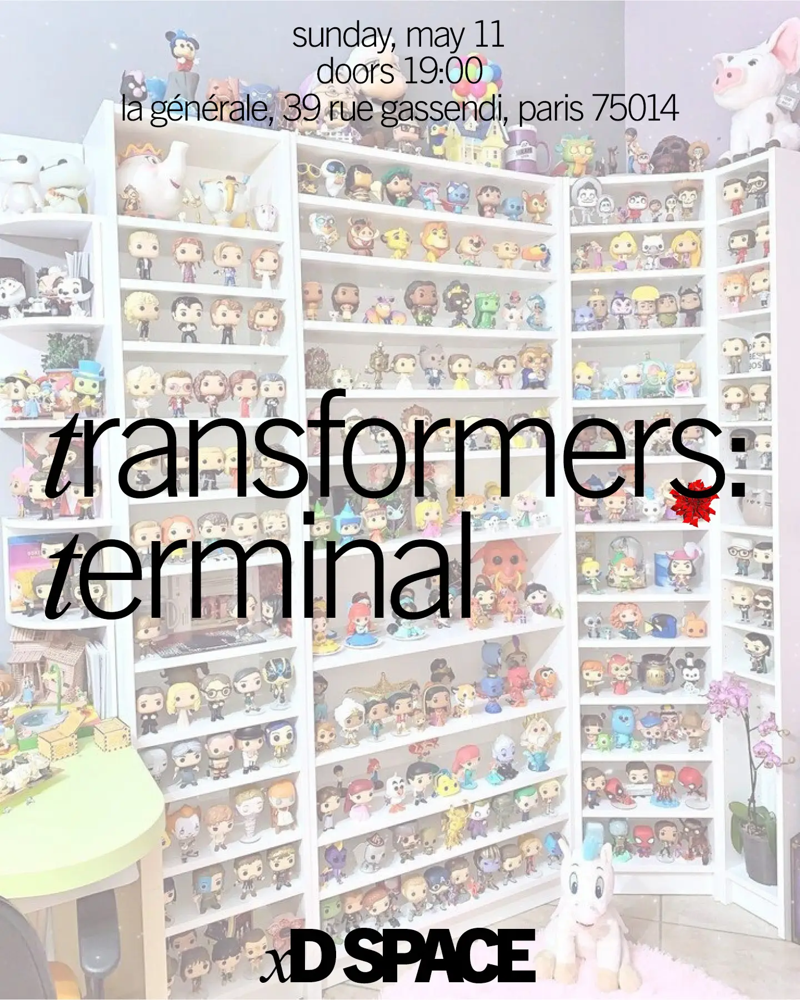

Transformers: Terminal

xD SPACE is screening Transfomers: Terminal at La Générale on May 11, 2025. Doors open at 19:00, screening at 19:30.
Transformers: Terminal is a dark comedy that explores the chaotic world of fan culture, online obsession, and the strange spaces where digital relationships collide with reality. The film follows Aidan, an awkward fanboy, and Sierra, a rising content creator, as their internet connection turns real—with unsettling and unexpected consequences.
Find out what happens when the orbiter gets promoted to co-content creator?
Blending elements of coming-of-age drama, body horror, and satire, Transformers: Terminal offers a fresh, provocative take on the ways fandom shapes identity and connection in the digital age. What begins as a hopeful cyber romance quickly spirals into a surreal nightmare of nostalgia, intellectual property, and commodity fetishism.
Starring Natasha Mercado (The Joe Schmo Show, Adult Swim) with Russell Sorbello and featuring an original score by Joe DeGeorge (Harry and the Potters, Downtown Boys), the film has been compared to the work of Eugene Kotlyarenko and Jane Schoenbrun, with the dark humor of Todd Solondz.
A genre-bending debut from director Miles Engel-Hawbecker, with producer Theresa Tomi Faison, Transformers: Terminal is a love letter, and a cautionary tale, for anyone who's ever lost themselves in the world of fandom.
95 minutes. No subtitles. This film contains blood/gore, viewer discretion is advised.
Transformers: Terminal Website Instagram LetterBoxd